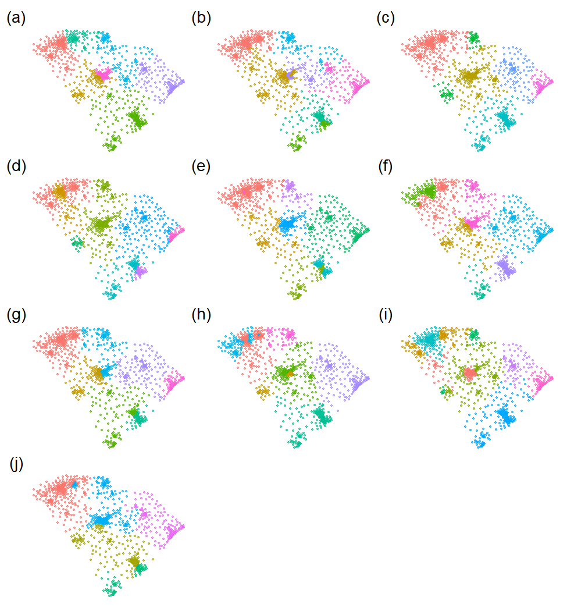

Install and load R packages
install.packages(c("sf","gdverse"), dep = T)
# install.packages("devtools")
devtools::install_github("stscl/sesp",build_vignettes = TRUE,dep = TRUE)
library(sf)
## Linking to GEOS 3.12.1, GDAL 3.8.4, PROJ 9.3.1; sf_use_s2() is TRUE
library(sesp)
library(gdverse)Using the same data as the gdverse idsa vignette:
depression = system.file('extdata/Depression.csv',package = 'gdverse') |>
readr::read_csv() |>
sf::st_as_sf(coords = c('X','Y'), crs = 4326)
## Rows: 1072 Columns: 13
## ── Column specification ───────────────────────────────────────────────────────────────────────────
## Delimiter: ","
## dbl (13): X, Y, Depression_prevelence, PopulationDensity, Population65, NoHealthInsurance, Neig...
##
## ℹ Use `spec()` to retrieve the full column specification for this data.
## ℹ Specify the column types or set `show_col_types = FALSE` to quiet this message.
depression
## Simple feature collection with 1072 features and 11 fields
## Geometry type: POINT
## Dimension: XY
## Bounding box: xmin: -83.1795 ymin: 32.11464 xmax: -78.6023 ymax: 35.17354
## Geodetic CRS: WGS 84
## # A tibble: 1,072 × 12
## Depression_prevelence PopulationDensity Population65 NoHealthInsurance Neighbor_Disadvantage
## * <dbl> <dbl> <dbl> <dbl> <dbl>
## 1 23.1 61.5 22.5 7.98 -0.0525
## 2 22.8 58.3 16.8 11.0 -0.254
## 3 23.2 35.9 24.5 9.31 -0.0540
## 4 21.8 76.1 21.8 13.2 0.0731
## 5 20.7 47.3 22.0 11 0.763
## 6 21.3 32.5 19.2 13.0 0.422
## 7 22 36.9 19.2 10.8 0.113
## 8 21.2 61.5 15.9 8.57 -0.154
## 9 22.7 67.2 15.7 17.8 -0.320
## 10 20.6 254. 11.3 12.7 0.457
## # ℹ 1,062 more rows
## # ℹ 7 more variables: Beer <dbl>, MentalHealthPati <dbl>, NatureParks <dbl>, Casinos <dbl>,
## # DrinkingPlaces <dbl>, X.HouseRent <dbl>, geometry <POINT [°]>SESP With Linear Regression
system.time({
g1 = sesp(Depression_prevelence ~ ., data = depression,
model = 'ols', overlay = 'intersection', cores = 8)
})
## user system elapsed
## 5.20 0.86 28.68
g1
## *** Spatially Explicit Stratified Power
##
## Q values are estimated using *Ordinary Least Square*
##
## -------------- Global Power of Determinant : ------------
## Variable Qvalue AIC BIC LogLik
## Neighbor_Disadvantage 0.296 4372.009 4401.873 -2180.004
## MentalHealthPati 0.286 4389.996 4429.814 -2186.998
## PopulationDensity 0.276 4405.695 4445.513 -2194.847
## X.HouseRent 0.225 4475.679 4510.520 -2230.840
## NoHealthInsurance 0.225 4478.352 4518.170 -2231.176
## Population65 0.222 4481.979 4521.797 -2232.990
## DrinkingPlaces 0.209 4500.026 4539.844 -2242.013
## Beer 0.181 4533.007 4562.871 -2260.504
## Casinos 0.179 4535.821 4565.685 -2261.911
## NatureParks 0.175 4541.835 4571.698 -2264.917
##
## ------------- Global Variable Interaction : ------------
## Variable Interaction
## PopulationDensity ∩ Population65 Enhance, bi-
## PopulationDensity ∩ NoHealthInsurance Enhance, bi-
## PopulationDensity ∩ Neighbor_Disadvantage Enhance, bi-
## PopulationDensity ∩ Beer Enhance, bi-
## PopulationDensity ∩ MentalHealthPati Enhance, bi-
## PopulationDensity ∩ NatureParks Enhance, bi-
## PopulationDensity ∩ Casinos Enhance, bi-
## PopulationDensity ∩ DrinkingPlaces Enhance, bi-
## PopulationDensity ∩ X.HouseRent Enhance, bi-
## Population65 ∩ NoHealthInsurance Enhance, bi-
##
## ! Only the top ten items of global scale are displayed.
## ! The others can be accessed through specific subsets.
plot(g1,slicenum = 10) +
ggplot2::theme(axis.text.x = ggplot2::element_text(
angle = 30,vjust = 0.85,hjust = 0.75)
)
Figure 1. Results of SESP With
Linear Regression
SESP With Spatial Lag Regression
system.time({
g2 = sesp(Depression_prevelence ~ .,
data = depression,
model = 'lag', cores = 8)
})
## user system elapsed
## 8.17 0.78 247.42
g2
## *** Spatially Explicit Stratified Power
##
## Q values are estimated using *Spatial Lag Model*
##
## -------------- Global Power of Determinant : ------------
## Variable Qvalue AIC BIC LogLik
## Neighbor_Disadvantage 0.293 4256.111 4290.952 -2121.055
## MentalHealthPati 0.287 4266.957 4311.752 -2124.478
## PopulationDensity 0.241 4267.938 4312.733 -2124.969
## NoHealthInsurance 0.208 4307.645 4357.418 -2143.822
## Population65 0.189 4324.897 4369.692 -2153.448
## X.HouseRent 0.189 4317.496 4357.314 -2150.748
## DrinkingPlaces 0.168 4335.838 4380.633 -2158.919
## Beer 0.152 4354.059 4393.878 -2169.030
## NatureParks 0.138 4373.845 4408.686 -2179.922
## Casinos 0.134 4356.378 4391.219 -2171.189
##
## ------------- Global Variable Interaction : ------------
## Variable Interaction
## PopulationDensity ∩ Population65 Enhance, bi-
## PopulationDensity ∩ NoHealthInsurance Enhance, bi-
## PopulationDensity ∩ Neighbor_Disadvantage Enhance, bi-
## PopulationDensity ∩ Beer Enhance, bi-
## PopulationDensity ∩ MentalHealthPati Enhance, bi-
## PopulationDensity ∩ NatureParks Weaken, uni-
## PopulationDensity ∩ Casinos Enhance, bi-
## PopulationDensity ∩ DrinkingPlaces Enhance, bi-
## PopulationDensity ∩ X.HouseRent Enhance, bi-
## Population65 ∩ NoHealthInsurance Enhance, bi-
##
## ! Only the top ten items of global scale are displayed.
## ! The others can be accessed through specific subsets.
plot(g2,slicenum = 10) +
ggplot2::theme(axis.text.x = ggplot2::element_text(
angle = 30,vjust = 0.85,hjust = 0.75)
)
Figure 2. Results of SESP With
Spatial Lag Regression
SESP With Spatial Error Regression
system.time({
g3 = sesp(Depression_prevelence ~ .,
data = depression,
model = 'error', cores = 8)
})
## user system elapsed
## 5.28 0.27 137.28
g3
## *** Spatially Explicit Stratified Power
##
## Q values are estimated using *Spatial Error Model*
##
## -------------- Global Power of Determinant : ------------
## Variable Qvalue AIC BIC LogLik
## Neighbor_Disadvantage 0.290 4252.835 4287.676 -2119.417
## PopulationDensity 0.272 4227.185 4271.980 -2104.592
## MentalHealthPati 0.270 4264.868 4309.663 -2123.434
## X.HouseRent 0.220 4284.841 4324.660 -2134.421
## NoHealthInsurance 0.220 4285.254 4330.050 -2133.627
## Population65 0.217 4291.297 4336.092 -2136.648
## DrinkingPlaces 0.203 4299.139 4343.935 -2140.570
## Beer 0.177 4327.157 4361.998 -2156.579
## Casinos 0.170 4316.437 4351.278 -2151.219
## NatureParks 0.164 4338.373 4373.214 -2162.186
##
## ------------- Global Variable Interaction : ------------
## Variable Interaction
## PopulationDensity ∩ Population65 Enhance, bi-
## PopulationDensity ∩ NoHealthInsurance Enhance, bi-
## PopulationDensity ∩ Neighbor_Disadvantage Enhance, bi-
## PopulationDensity ∩ Beer Enhance, bi-
## PopulationDensity ∩ MentalHealthPati Enhance, bi-
## PopulationDensity ∩ NatureParks Weaken, uni-
## PopulationDensity ∩ Casinos Enhance, bi-
## PopulationDensity ∩ DrinkingPlaces Enhance, bi-
## PopulationDensity ∩ X.HouseRent Enhance, bi-
## Population65 ∩ NoHealthInsurance Enhance, bi-
##
## ! Only the top ten items of global scale are displayed.
## ! The others can be accessed through specific subsets.
plot(g3,slicenum = 10) +
ggplot2::theme(axis.text.x = ggplot2::element_text(
angle = 30,vjust = 0.85,hjust = 0.75)
)
Figure 3. Results of SESP With
Spatial Error Regression
SESP With Spatial Durbin Regression
system.time({
g4 = sesp(Depression_prevelence ~ ., data = depression,
model = 'lag', durbin = TRUE, cores = 8)
})
## user system elapsed
## 7.72 0.88 246.64
g4
## *** Spatially Explicit Stratified Power
##
## Q values are estimated using *Spatial Durbin Model*
##
## -------------- Global Power of Determinant : ------------
## Variable Qvalue AIC BIC LogLik
## MentalHealthPati 0.331 4233.808 4308.467 -2101.904
## Neighbor_Disadvantage 0.313 4244.421 4299.171 -2111.210
## PopulationDensity 0.286 4233.201 4307.860 -2101.600
## NoHealthInsurance 0.269 4269.331 4353.945 -2117.666
## X.HouseRent 0.239 4285.802 4350.506 -2129.901
## Population65 0.233 4295.578 4370.238 -2132.789
## Casinos 0.227 4298.022 4372.682 -2134.011
## DrinkingPlaces 0.218 4297.905 4362.610 -2135.952
## Beer 0.189 4326.896 4381.646 -2152.448
## NatureParks 0.188 4333.978 4388.729 -2155.989
##
## ------------- Global Variable Interaction : ------------
## Variable Interaction
## PopulationDensity ∩ Population65 Enhance, bi-
## PopulationDensity ∩ NoHealthInsurance Enhance, bi-
## PopulationDensity ∩ Neighbor_Disadvantage Enhance, bi-
## PopulationDensity ∩ Beer Enhance, bi-
## PopulationDensity ∩ MentalHealthPati Enhance, bi-
## PopulationDensity ∩ NatureParks Enhance, bi-
## PopulationDensity ∩ Casinos Enhance, bi-
## PopulationDensity ∩ DrinkingPlaces Enhance, bi-
## PopulationDensity ∩ X.HouseRent Enhance, bi-
## Population65 ∩ NoHealthInsurance Enhance, bi-
##
## ! Only the top ten items of global scale are displayed.
## ! The others can be accessed through specific subsets.
plot(g4,slicenum = 10) +
ggplot2::theme(axis.text.x = ggplot2::element_text(
angle = 30,vjust = 0.85,hjust = 0.75)
)
Figure 4. Results of SESP With
Spatial Durbin Regression
SESP With Spatial Autoregressive Combined
system.time({
g5 = sesp(Depression_prevelence ~ .,
data = depression,
model = 'sac', cores = 8)
})
## user system elapsed
## 8.64 0.89 659.73
g5
## *** Spatially Explicit Stratified Power
##
## Q values are estimated using *Spatial Autoregressive Combined*
##
## -------------- Global Power of Determinant : ------------
## Variable Qvalue AIC BIC LogLik
## Neighbor_Disadvantage 0.280 4236.875 4281.670 -2109.437
## PopulationDensity 0.263 4211.086 4260.859 -2095.543
## MentalHealthPati 0.233 4257.856 4307.629 -2118.928
## Population65 0.212 4271.953 4321.726 -2125.977
## X.HouseRent 0.211 4263.141 4307.936 -2122.570
## NoHealthInsurance 0.209 4265.819 4315.591 -2122.909
## DrinkingPlaces 0.196 4277.345 4327.118 -2128.672
## Casinos 0.168 4290.655 4330.473 -2137.327
## Beer 0.166 4308.727 4348.546 -2146.364
## NatureParks 0.165 4314.683 4354.501 -2149.342
##
## ------------- Global Variable Interaction : ------------
## Variable Interaction
## PopulationDensity ∩ Population65 Enhance, bi-
## PopulationDensity ∩ NoHealthInsurance Enhance, bi-
## PopulationDensity ∩ Neighbor_Disadvantage Enhance, bi-
## PopulationDensity ∩ Beer Enhance, bi-
## PopulationDensity ∩ MentalHealthPati Enhance, bi-
## PopulationDensity ∩ NatureParks Weaken, uni-
## PopulationDensity ∩ Casinos Enhance, bi-
## PopulationDensity ∩ DrinkingPlaces Enhance, bi-
## PopulationDensity ∩ X.HouseRent Enhance, bi-
## Population65 ∩ NoHealthInsurance Enhance, bi-
##
## ! Only the top ten items of global scale are displayed.
## ! The others can be accessed through specific subsets.
plot(g5,slicenum = 10) +
ggplot2::theme(axis.text.x = ggplot2::element_text(
angle = 30,vjust = 0.85,hjust = 0.75)
)
Figure 5. Results of SESP With
Spatial Autoregressive Combined
SESP With Geographically Weighted Regression
system.time({
g6 = sesp(Depression_prevelence ~ .,
data = depression,
model = 'gwr', cores = 8)
})
## user system elapsed
## 7.81 1.02 138.22
g6
## *** Spatially Explicit Stratified Power
##
## Q values are estimated using *Geographically Weighted Regression*
##
## -------------- Global Power of Determinant : ------------
## Variable Qvalue AIC
## MentalHealthPati 0.384 4229.657
## Neighbor_Disadvantage 0.368 4254.204
## PopulationDensity 0.367 4256.980
## X.HouseRent 0.324 4325.510
## Beer 0.306 4355.146
## Population65 0.299 4365.582
## Casinos 0.299 4366.973
## DrinkingPlaces 0.291 4377.897
## NoHealthInsurance 0.249 4436.470
## NatureParks 0.238 4453.684
##
## ------------- Global Variable Interaction : ------------
## Variable Interaction
## PopulationDensity ∩ Population65 Enhance, bi-
## PopulationDensity ∩ NoHealthInsurance Weaken, uni-
## PopulationDensity ∩ Neighbor_Disadvantage Enhance, bi-
## PopulationDensity ∩ Beer Weaken, uni-
## PopulationDensity ∩ MentalHealthPati Enhance, bi-
## PopulationDensity ∩ NatureParks Weaken, uni-
## PopulationDensity ∩ Casinos Weaken, uni-
## PopulationDensity ∩ DrinkingPlaces Weaken, uni-
## PopulationDensity ∩ X.HouseRent Enhance, bi-
## Population65 ∩ NoHealthInsurance Weaken, uni-
##
## ! Only the top ten items of global scale are displayed.
## ! The others can be accessed through specific subsets.
plot(g6,slicenum = 10) +
ggplot2::theme(axis.text.x = ggplot2::element_text(
angle = 30,vjust = 0.85,hjust = 0.75)
)
Figure 6. Results of SESP With
Geographically Weighted Regression
Results of optimal spatial discretization
plot_optdisc = \(g){
gmap = sf::st_set_geometry(g$optdisc,sf::st_geometry(depression))
fig1 = seq_along(g$optdisc) |>
purrr::map(\(.x) ggplot2::ggplot(data = gmap) +
ggplot2::geom_sf(ggplot2::aes(color = factor(g$optdisc[,.x,drop = TRUE])),
alpha = .65, size = 0.5) +
ggplot2::labs(color = 'zones') +
ggplot2::theme_void() +
ggplot2::theme(
legend.position = "none")
) %>%
patchwork::wrap_plots(ncol = 3, byrow = TRUE) +
patchwork::plot_annotation(
tag_levels = 'a',
tag_prefix = '(',
tag_suffix = ')',
tag_sep = '',
theme = ggplot2::theme(plot.tag = ggplot2::element_text(family = "serif"),
plot.tag.position = "topleft"))
return(fig1)
}
plot_optdisc(g1)
Figure 7. Optimal spatial
discretization result with linear regression operator.
plot_optdisc(g2)
Figure 8. Optimal spatial
discretization result with spatial lag regression operator.
plot_optdisc(g3)
Figure 9. Optimal spatial
discretization result with spatial error regression operator.
plot_optdisc(g4)
Figure 10. Optimal spatial
discretization result with spatial durbin regression operator.
plot_optdisc(g5)
Figure 11. Optimal spatial
discretization result with spatial autoregressive combined
operator.
plot_optdisc(g6)

Figure 12. Optimal spatial
discretization result with geographically weighted regression
operator.